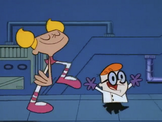

Dexter’s Laboratory

Details
My notes
dexter
Added from my childhood-show list. “Dexter” is recorded here as the Cartoon Network animated series Dexter’s Laboratory.
About the show
Dexter is a young inventor with a secret laboratory. His inventions and experiments often run into trouble when his older sister Dee Dee enters the lab.
- Creator
- Genndy Tartakovsky
- Original series
- 1996–2003
- Original network
- Cartoon Network
Specific episodes, language, and viewing routines have not yet been added to my notes.
Watch for recognition
Dee Dee’s Secret — official Cartoon Network clip